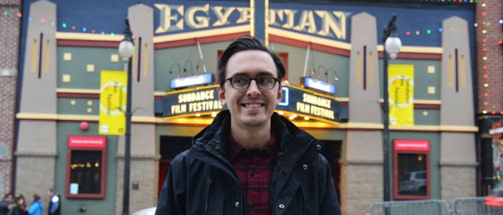
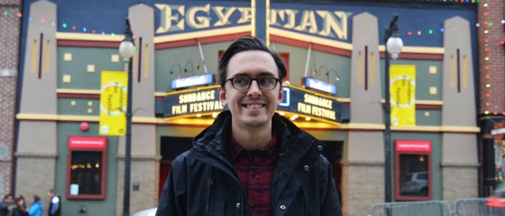

About Charlie Thomason
My name is Charlie Thomason and I'm a Front-end Web Developer and Artist living in Chicago, Illinois. I love photography, auto racing, movies, traveling, birds, and playing guitar and piano. This website features some of my best paintings and photography, web development demos, and a blog.
I was born in Red Bank, New Jersey in 1984, went to high school & college in Kentucky, and moved to Chicago in 2008. I currently live in the South Loop neighborhood of Chicago with my wife, Amanda, and our 2 cats, Baxter and Chloe.
My specialties as a Web Developer include JavaScript/jQuery, API integration, responsive CSS, and web accessibility. I have been a full-time Software Engineer at Uptake since March 2017. Prior to that, I was a Presentation Layer Engineer at Razorfish for 4 years. I received my Masters in New Media Studies from DePaul University in 2010, and studied web development at The Starter League in early 2012.
I've always been a visually creative person, and earned my Bachelor of Fine Arts in Art Studio from the University of Kentucky in 2007. Today, I still enjoy doing art as a hobby. I especially enjoy working with watercolor and ink painting, drawing, and photography. In December 2016, I self-published a book of paintings of birds found in Chicago entitled Birds of Chicagoland: Paintings by Charlie Thomason. I spent over 2 years working on the bird painting book, and personally consider it to be my masterpiece.
Some fun facts about me:
- I met my wife, Amanda, at the 2009 Sundance Film Festival in Park City, Utah. We returned to the festival again in 2010, 2011, and 2015. I asked her to marry me while at the 2015 festival.
- I am a Catholic, and member at Old St. Pat's, which is where I was married in July 2016.
- I love auto racing, and it is the only sport I really follow. My favorite driver of all-time is Michael Schumacher. I am currently a fan of the following teams & drivers:
- Formula 1: Scuderia Ferrari, Haas, McLaren-Honda, and Sauber
- IndyCar: Chip Ganassi Racing and Andretti Autosport
- NASCAR: Dale Earnhardt Jr, Kyle Larson, Brennan Poole, and Ryan Blaney
- Formula-E: Faraday Future Dragon and DS Virgin Racing
- WeatherTech SportsCar: Risi Competizione Ferrari, Scuderia Corsa Ferrari, and Chip Ganassi Ford
- My favorite movies are the original Star Wars (1977), Tim Burton's Beetlejuice (1988), and Charlie Chaplin's The Gold Rush (1925).
- My favorite bands/musical artists are The Beatles, Nirvana, Tom Waits, and Metallica.
- My favorite books are J.R.R. Tolkien's The Lord of the Rings, Patrick Süskind's Perfume, Michael Crichton's Timeline, Richard J. King's The Devil's Cormorant, and Helen Macdonald's H is for Hawk.
- My favorite TV shows are The Flash, Game of Thrones, Anthony Bourdain: Parts Unknown, Top Gear/The Grand Tour, and Rocko's Modern Life.
- My favorite places in the world are: Venice, Italy; Emerald Isle, North Carolina; Camden, Maine; San Diego, California; and Chicago, Illinois.
About this website
This entire website is intended to serve as an example of my front-end web development skills. Everything on this site I designed and built from scratch (with the exception of some elements in the 'Code' section demos). The content is all static HTML, built using Handlebars, Assemble, Grunt, jQuery, and Sass. The main site is hosted with Github Pages, and the blog is hosted on Tumblr using a custom Tumblr theme. If you want to see more of how the site is built, feel free to view the source code for this website.
Contact Charlie
Email:
thomason [dot] charlie [at] gmail [dot] com
Social Media:
- Instagram - @charliethomason
- Twitter - @Charlie312T
- Letterboxd - @CharlieT
- YouTube